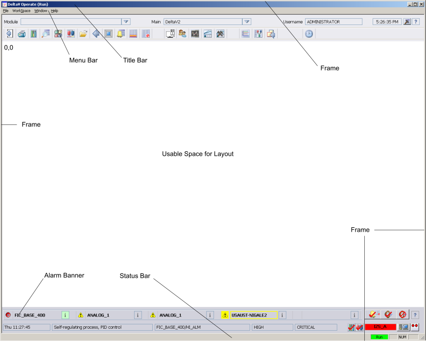
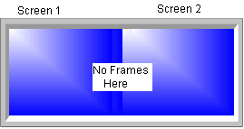

Working with pictures on multiple monitors
The following sections describe how to configure and use pictures with multiple monitor workstations.
Positioning Pictures
To set the position (also referred to as the location or x/y coordinates) of a picture on a screen, configure the frsSetPictureCoordinates function in the UserSettings file's script. Picture positions can also be set from any script but the UserSettings file allows for global (system-wide) picture positioning and also workstation-specific picture positioning. Refer to Customizing the DeltaV Operate Environment for details.
The default starting coordinates (0,0) are always at the top left of the screen's usable space. When items (such as menu bar, title bar, alarm banner and toolbar) are not included on the picture, the extra space is returned to the main template and the 0,0 coordinate moves up on the screen's x/y axis. The following table lists the common elements that are included or excluded on a picture and the height of that element for two screen resolutions.
The Title Bar and Menu Bar are configured in the User Preferences dialog on the Environment Protection tab.
|
Element |
Height in pixels (1024×768) |
Height in pixels (1280×1024) |
Height in pixels (1680×1050) |
Height in pixels (1920×1080) |
|
Title Bar |
25 |
25 |
25 |
18 |
|
Menu Bar |
20 |
20 |
20 |
19 |
|
Frame |
4 (width =4) |
3 (width = 3) |
3 (width = 3) |
8 |
|
Toolbar |
60 |
80 |
80 |
94 |
|
Alarm Banner |
60 |
80 |
80 |
94 |
|
Status Bar |
25 |
25 |
25 |
25 |

When positioning the pictures on multiple monitors, the frame encircles the entire display (all monitors). So you only need to calculate the amount of space lost for the outside edges of each screen.

Picture coordinates (x/y) are calculated based the screen where the picture will be opened. The coordinates are not calculated across the entire configuration of monitors. Therefore, you can only set the x/y coordinates relative to the screen size (1024×786, 1280×1024, 1680x1050, or 1920x1080). Anything greater results in an Out of Range trace message box and the picture will open in a default location so it can be seen on the screen. When using the maximum ranges, there is a possibility of opening displays out of view.
If the picture fails to open where configured check the trace message box display. The trace message box can be accessed by clicking the hammer icon on the main toolbar. Additional information can be found in the workstation's event viewer log.
For each picture type (detail display, faceplate, and so on) there is a single set of x/y coordinates. All the pictures of the particular type (for example, faceplates) will open in the same relative x/y position on any screen. There are not different x/y coordinates based on the screen so you cannot open a picture (for example, the faceplate) at two different places on two different screens when using a multiple monitor system.
Subordinate popup pictures (mode, SP, Named Set and XCommand dialogs) always open next to the originating popup (faceplate, detail display, and so on). The subordinate popup always attempts to open left of the originating popup and aligned at the top. If that is not possible, (not enough room to the left), the subordinate popup opens to the right and shifts up or down to accommodate it's size. A subordinate popup will not cross over onto another screen.
If a subordinate popup is opened independent of the originating popup (for example, from a script), the subordinate popup opens at the cursor position.
Opening Pictures
You can open/replace pictures on any one of the configured screens in a DeltaV system with multiple monitors. Remember though that in an Operator Keyboard system, the Operator Keyboard display cannot be replaced, closed, or swapped.
Also, certain pictures (for example, alarm banners & toolbars) are set to open on specific monitors and cannot be changed as they are currently named. However, you can change the name of the picture and then set the picture to open on the monitor of your choosing.
If the picture fails to open where configured check the trace message box display. The trace message box can be accessed by clicking the hammer icon on the main toolbar. Additional information can be found in the workstation's event viewer log.
The Replace Main Picture dialog shows a graphical representation of the screen layout. In the following image, the dialog shows a four monitor horizontal layout. Notice that the dialog's message window informs you when a picture is already open. Touch versions of this dialog look slightly different from the one shown here.
This dialog box uses a green background to indicate the screen from which a picture is opened and an X to indicate the Operator Keyboard screen. The Replace Main Picture dialog shown above was opened from Monitor 2 (button number 2 has a green background) and the Operator Keyboard screen is User 1. Refer to the figures Four Monitor Horizontal Layout and Four Monitor Square Layout in Installing and Configuring the Hardware for supported monitor arrangements.
Remember that pictures, including faceplates, detail, and trends must have copies to be opened multiple times simultaneously. To store multiple copies of the same picture, use either the Update Popup Pictures utility (for faceplates, detail displays and trends) or the Update Main Pictures utility (both found on the DeltaV Utilities toolbar). These utilities make copies of the respective pictures and names them by appending a number, giving each file a unique name. Refer to the topics, Updating Popup Pictures and Dynamos and Updating Main Pictures and Dynamos for more information.
You can have popup pictures opened up to four times and main pictures opened up to two times. When opening the main picture the second time on the same monitor, it will open as a popup picture. When opening the same picture on two different monitors (Monitor 1 and Monitor 3, for example), it opens as a main picture.
Swapping Pictures
Pictures can be swapped between any non-Operator Keyboard screens. However, two default pictures can not be swapped. When an initial picture (for example, AlarmBan) is set to open on another screen (for example, the secondary screen), the system checks to see if this picture is already scheduled to be opened (for example, on the primary screen). If the screen numbers do not match, an entry is placed in the trace message box and the swap does not occur. If the pictures must be able to be swapped, you will have to rename the pictures so that the system does not perform this check.
The trace message box can be accessed by clicking the hammer icon on the main toolbar. Additional information can be found in the workstation's event viewer log.
If a picture created from the full screen template is swapped with a picture created from the main template, the full screen picture is compressed and the main picture is expanded to fit the allocated space on the screen. In general, swapping pictures of different sizes is not recommended as it can cause portions of the screen to be obscured. The Toolbar2 picture contains a Swap Pictures button and the Swap Pictures command can also be accessed by right-clicking on a picture in DeltaV Operate Run and selecting . In the Swap dialogs, a button with an X indicates the Operator Keyboard screen and a grayed out button indicates the current monitor.
Moving Pictures
The buttons in the upper left corner of faceplate, detail, and trend pictures are used to move these pictures from one screen to another. The buttons show the current monitor layout, square or horizontal, and the green button indicates the current monitor. The following image shows a square monitor layout with Monitor 2 as the current monitor.
A picture's relative position on the screen is maintained when it is moved. Refer to the figures Four Monitor Horizontal Layout and Four Monitor Square Layout in Installing and Configuring the Hardware for supported monitor arrangements. If a faceplate was originally positioned at the lower left corner of the screen and then moved to a new screen, it appears at the lower left corner of the screen to which it was moved.
Notice that this faceplate has a pushpin in the upper left-hand corner. The pushpin allows you to have multiple faceplates open at the same time. Push the pin to keep the faceplate open when you open another faceplate. This option is configured in the UserSettings file, which is created from the User_Ref picture, and is disabled by default. Be aware that Operator Keyboard faceplates are disabled when this option is enabled.
Reasons why a picture does not behave as expected (for example, the move does not occur) is recorded in the trace message box. The trace message box can be accessed by clicking the hammer icon on the main toolbar. Additional information can be found in the workstation's event viewer log.